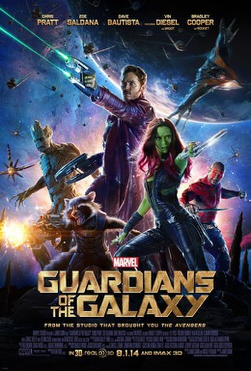

Una aventura galáctica sin igual
En el vasto universo, un grupo de inadaptados se une para salvar a la galaxia de una amenaza devastadora. Acción, humor y corazón en una de las películas más originales del Universo Cinematográfico de Marvel.
Bienvenidos al sitio
Guardianes de la Galaxia (2014), dirigida por James Gunn, revolucionó el género de los superhéroes al presentar un equipo de antihéroes caóticos, divertidos y profundamente humanos —aunque ninguno de ellos lo sea del todo— en un contexto de ciencia ficción espacial.
La película combina el humor irreverente, la acción espectacular y una banda sonora icónica de los años 70 y 80 para crear una experiencia cinematográfica única dentro del Universo Marvel.
En este sitio encontrarás todo sobre la película: su historia, su reparto, el proceso de producción, curiosidades del rodaje y los premios que cosechó.
Ficha técnica
Trama
Peter Quill, un aventurero espacial conocido como Star-Lord, se convierte en el objetivo de una implacable caza de recompensas tras robar un misterioso artefacto. Para sobrevivir, se alía con cuatro inadaptados: Gamora, Drax el Destructor, Rocket (un mapache modificado genéticamente) y Groot (un árbol humanoide). Juntos forman los Guardianes de la Galaxia.
Género
Superhéroes / Ciencia ficción / Acción / Comedia. La película destaca por mezclar el tono épico del espacio con un humor inesperado y personajes profundamente trabajados emocionalmente.